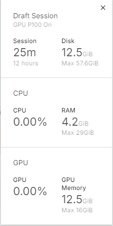
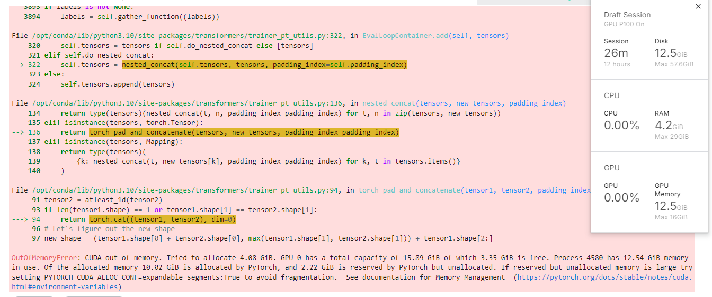
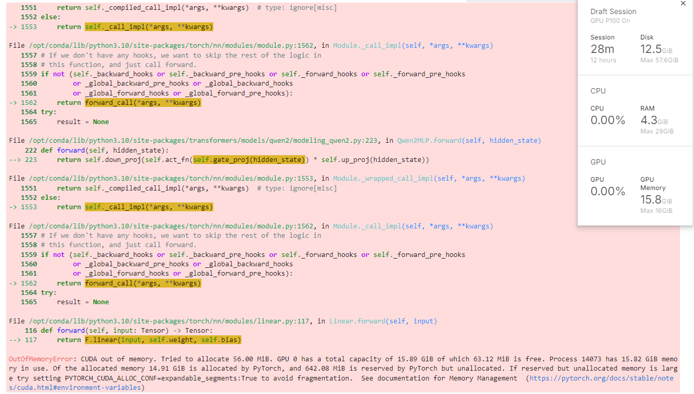

How Much Memory Does Your Model Need on GPU? Let’s Find Out!
A Tool to Estimate Model Memory Usage on GPU
Hey there, fellow developers and curious minds! 🖖 Ever wondered how much juice you need to run a model on your GPU? Whether you’re knee-deep in code or just dipping your toes into the tech waters, the question of resources has likely crossed your mind.
Building a Tool to Estimate GPU Memory Usage
Guess what? I built a tool for that! 🎉 But hold up, before you get too excited… it only estimates the memory required to load the model onto a GPU. Yep, just that—no more, no less. If you’re itching to test it out, here’s the link.
Why Only Estimate GPU Memory for Loading?
You might be asking, “Why just the memory for loading?” Good question! It’s because to really figure out how much resources a model needs to run (whether training or inference), you actually need to run it. Yep, no shortcuts here.
It all depends on things like the size of your input/batch, the quality of your data (low-res images vs. high-res by eg), and a whole bunch of other factors. 🤯 Oh, and don’t forget the extra memory needed to store activations during the forward pass and gradients during the backward pass. The bigger the model, the more resources you’ll need. It’s a classic case of go big or go home!
So, How Do I Know How Much Memory My Model Needs?
Here’s the deal: The memory a model uses for training is not the same as it uses for inference. Training requires more memory because it needs to store activations and gradients for backpropagation. Unfortunately, there’s no one-size-fits-all rule to tell you exactly how much memory you’ll need, but we can make an educated guess.
You can start by using my tool to get a minimum memory estimate for loading the model. To estimate training memory, a rough approach is to multiply that number by 10, but keep in mind this is just a ballpark figure. The exact factor can vary depending on your model architecture and batch size. To be safe, always test with different configurations to find the sweet spot.
During inference, models generally require less memory and run faster compared to training, but there are exceptions. Monitoring tools like nvidia-smi can help you keep track of actual GPU usage and avoid surprises. 📊
Example Time! 🎮
Let’s take a practical example. I want to fine-tune the Qwen 2 model (Qwen/Qwen2-0.5B-Instruct) on a GPU P100 with 16GB of memory on Kaggle. For this exemple, I was trying to fine-tune the model on a dataset of 10k samples with a batch size of 2 and a maximum of 800 tokens per input, on a NER task.
When I load the model onto the GPU, it takes up around 2.6GB of memory. Not too bad, right? But when I try to train the model, you see in the image below, it maxes out all the resources. 🚀

And when it’s time for evaluation (where the model only does inference, no training), it crashes due to a lack of memory.

🤦♂️ Moral of the story: Even if you have the best GPU on the market, if you don’t have enough memory, you’re done for!
In fact, if I increase the batch size or the number of tokens per input, the training won’t even start. Here’s what happens when I try to train the model with a batch size of 2 and 1500 tokens per input:

So be mindful of those settings when working with large models!
V100 vs. A100 vs. Whatever GPU: What Difference Does It Make?
So, you might be wondering, “Does it really matter which GPU I use?” Well, the short answer is: Absolutely! 🏎️
It’s like traveling from Canada to France. You could either fly or bike. Pretty obvious which one gets you there faster, right? The same logic applies to GPUs—more powerful ones will get the job done quicker, especially when running large models.
Let’s break it down:
Powerful GPUs like the A100 not only handle large models better but also have extra features, like mixed-precision training, that can reduce memory usage and speed things up. They’re like the jet engines of the GPU world—fast, efficient, and capable of handling heavy workloads with ease.
Older or less powerful GPUs like the V100 can still do the job, but they might struggle with bigger models or more complex tasks. It’s like taking a slower flight—still gets you there, but not as fast or smoothly.
Whatever GPU you have, just remember: You need both memory and raw power to make your model run efficiently. If your GPU isn’t powerful enough, your model might take longer to run or could even crash. And nobody wants that!
So, whether you’re eyeing the latest A100 or making do with what you’ve got, the takeaway is clear: A more powerful GPU means faster, more efficient model runs. If you need to go deeper, you can read this article too.
Alternatives If Your Model Is Too Big
Got a huge model with over a billion parameters? No worries, there are alternatives! You can try building a smaller model that uses fewer resources. Techniques like transfer learning, model quantization, or even using a smaller model altogether can help.
However, keep in mind that these approaches might impact accuracy. Sometimes the trade-off isn’t that significant, and you can even set up safeguards for uncertain predictions, allowing the user to choose the most appropriate response. 💡
Fun fact: I’m working on a tool to anonymize text before feeding it to a large language model (LLM), and I use one of these techniques to run the model directly in the browser. Check it out here!
Takeaways
Alright, let’s wrap things up:
- Estimating exact memory requirements for your model can be tricky, but my tool can give you a good starting point.
- The more powerful your GPU, the faster and smoother your model will run—so choose wisely!
- If your model is too big, consider alternatives like downsizing or using techniques that reduce resource demands, though be mindful of potential accuracy trade-offs.
Goodbye and Thanks!
Thanks for sticking with me through this post! I hope you found it helpful. If you have any thoughts, suggestions, or just want to say hi, feel free to reach out via email or drop an issue below. I’m always open to learning and would love to hear from you.
Take care, and happy coding! 🚀